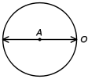
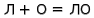

Беседа 3479 от 3877 · Беинса Дуно
Любов и Обич
„Отче наш“
„Духът Божи“
(Направихме упражнението за дишането, както обливането: дигане ръцете нагоре – вдишване. Задържане ръцете над главата с допрени пръсти – задържане. Спускане ръцете настрани – издишване.
Двете ръце надясно с допрени пръсти. Лявата се движи по дясната, докато дойде настрани. Двете ръце наляво, с допрени пръсти. Дясната ръка се движи по лявата, докато дойде настрани.)
Ако човек не упражнява своята уста, ако не яде, може ли да задоволи своя глад? По някой път ние изгубваме основните неща, които трябва да се имат в ума. Човек се ражда и расте, мисли, че ще стане нещо от него. Започва от малките величини. Човек като слиза на Земята, става толкоз малък, че с микроскоп трябва да го търсиш. До известно време, после се уголемява и след туй пак започва да се смалява. Сега питат: защо човек трябва да се смалява и да се увеличава? Ако човек знае защо се смалява и защо се увеличава, какво ще придобие? Всичките смалявания произтичат от материалистическо разбиране. Хората искат да знаят. Да разбираш някои неща, то е материалистическо.
Вие мислите сега какво ще стане с вас. Значи, ако една бучка захар се стопява, то е едно физическо проявление. Тази захар е твърда, пада в една течност, стопява се. Казва: „Какво ще стане със захарта?“ Отива във водата. Какво ще стане с нея? Какво стана? Не се губи тази захар, тя изгубва само своята гъстота и своята твърдост. Вие сте радостни и весели, вървите по пътя и по невнимание ударите крака си или коляното и веднага изгубвате вашето настроение. Питате къде отиде вашето веселие? Значи ударът в коляното веднага наруши цялата хармония, която имате. Някой път кажат ви една дума и се изгубва цялото ви настроение. Само дойде някой и ви каже: „Защо сте така пожълтели, очите ви са станали малко мътни.“ Двама, трима души като ви кажат това, вие сте вече болен.
Здравето от болестта по какво се отличава? В здравето ти си весел, в болестта ти си сериозен. В здравето имаш да вземаш, в болестта имаш да даваш. Болестта взема от тебе, вследствие на това си неразположен.
Сега ние се спираме върху някои неща, които не са съществени, от които се нарушава равновесието на нашия живот. Да допуснем, че един певец, колкото и да е виден, ако е в една стая, дето температурата е 15 градуса под нулата, може ли той да пее? За да може да пее, трябва да има особена температура. Всеки един човек трябва да знае каква е неговата температура. Има една нормална температура, при която човек може да живее. Има една температура, при която човек се смразява. По някой път вие нямате никакво желание да работите, казвате: „Моята работа е свършена!“ Какво се е свършило? Ако един човек замръзне, какво се е свършило с него? Трябва да го размразим. Че е замръзнал, това не показва, че той е умрял.
Да кажем, вие често изгубвате настроението си. Младият е много взискателен, старите стават много страхливи. Той казва, че някой път му треперят краката, че стомахът му е разстроен, бъдещето почти не го интересува, мисли за другия свят, къде ще иде, колко далеч е оня свят. Той мисли, че хиляди километри ще отиде някъде. Възможно е това, но тези са въпроси неразрешени. Къде ще идеш, то е неразрешен въпрос. Ако идеш в университета болен, какво ще научиш? Ако идеш здрав в училището, ще научиш нещо; щом не си здрав, какво ще научиш?

Питам: Възможно ли е човек да слезе в центъра при тия условия, които имаме? То е невъзможно. Веществото е така твърдо, че е по-твърдо от диаманта, такова налягане има там. Какво ще научите долу? Щом слезете в центъра, какво ще научите? Ще научите, че телата са много тежки.
Та, казвам: По някой път, когато искате да разберете някоя тайна, веднага хората започват да чувстват едно голямо смущение. Когато Айнщайн внесе своята теория, мнозина математици започнаха да разсъждават за Вселената, колко голяма е Вселената. Ако знаем колко голяма е Вселената, какво ще ни ползува? По някой път не се ползуваме, понеже ние се ограничаваме, мислим, че няма с какво да се занимаваме. Човек след като е живял 50–60 години на Земята, казва: „Не ме интересува!“ Какво ще го интересува?
Сега кое е най-важното нещо в света? Най-важните неща са две: дишането и яденето. С дишането всички започват. С яденето, до известно време ядат, докато се развали стомахът; най-после развалят се зъбите, престане да яде. След като диша дълго време, развалят се дробовете, казват: „Свърши се вече!“ Но тия разсъждения не са прави. Ако ти пътуваш с един автомобил, развали се автомобилът, той, автомобилът, е превозно средство за тебе. Развали се автомобилът – не значи, че и ти си се развалил. Ще слезе шофьорът, ще го поправи и автомобилът пак ще тръгне. И вие сте шофьор, имате един автомобил, който често се разваля. Ще го поправите. Пукат се гумите, после не му достига бензин, някой път спирачките спират. Да се развали спирачката на някой автомобил и ако той пътува по някой наклонен път, доста опасна работа е.
Казвам: Търпението какво представя? Спирачка. Най-голямата спирачка е то. Защо трябва да бъдеш търпелив? Когато слизаш, ако нямаш спирачка – търпението, – колата ти не може да върви. Има известни научни въпроси, обществени, семейни, лични въпроси, за които трябва голямо търпение.
Сега, разликата между търпението и неволята каква е? Разликата седи в следното: неволята всички я носят, а търпението е свободен избор. То е достояние само на силните хора. За да познаеш търпелив ли си, трябва да бъдеш свободен. Не да ти се налагат нещата. Трябва окръжаващата среда да бъде свободна. За пример, тебе не трябва да ти се налага студът отвън. Като излезеш вън, студът като те види, да се стопли времето. Да знае, че ти си господар на положението. Ако е много топло, веднага топлината да се съобрази с тебе. Ти си свободен. Ако излезеш, че ти трябват ръкавици, че ти трябват обуща, ти трябва да се съобразяваш – студът не е с тебе.
Докато трябва ние да се съобразяваме с външните условия, ние не сме свободни. Навсякъде трябва да се съобразяваме. Но съобразява се човек, който носи неволята – той се подчинява. Ако вървиш през гората и дойдат разбойници и кажат: „Горе ръцете!“, защо трябва да ги дигаш? Нали и ние направихме упражнението и дигнахме ръцете горе? Ние считаме унижение да си дигнем ръцете. Ако каже „Горе ръцете!“ или „Долу ръцете!“, какво има? Едното положение е положително, а другото положение е отрицателно. Ако не може да дигаш ръцете горе и не може да ги сваляш долу, ти не може да бъдеш свободен човек. Разбойниците са учени хора, казват: „Ти знаеш да си дигаш ръцете!“ После, джобовете ти са пълни с този материал, не трябва да имаш излишни тежести, да ги носиш. Иде човекът да те разтовари от товара.
Разправяха ми един случай, не зная верен ли е или не: Тръгват двама българи за Виена. Иде във влака един господин добре облечен. И на двамата дава по една цигара. Изпущат цигарите и двамата заспиват. В това време на нашия познат му вземат съестните продукти, пък на другия задигат и куфарите. Като се събудили, куфарите ги няма, изчезнали. Защо изчезнали? Понеже искат да опитат по една цигара. Не ти трябва цигара, когато тръгнеш из Европа! Може да пушиш, но ще изгубиш яденето си, дрехите си.
Дойде някой, че ти проектира една идея. Казва: „В новото учение човек трябва да бъде свободен, да вярва в старите работи. В задгробен живот е празно, всичко е тук, на Земята.“ Ние се спираме и казваме: „Какво е съдържанието?“ Науката, и съвременната наука, трябва да освобождава човека. Ако една наука не освобождава, не помага на човека, тя не е наука. Спомагало е учението. Казвам да пеете, но пеенето е едно спомагало. В света науката е спомагало; и всичките отрасли на науката са спомагала.
Не сте запознати с вашата нива, в която растат мислите ви. Главата е нива, в която се сеят мислите. Те се сеят и никнат, като житото растат. Ако влезете в духовния свят, ще видите: една мисъл се посява, расте като някое растение, дава плод. Или се говори за човешкото сърце. Туй сърце, което имате, с него е свързана симпатичната нервна система. Сега учените хора се занимават с жлезите. Тия жлези се отнасят към слънчевия възел, към стомашния мозък. Ред има в тялото, с което се занимава човешкото сърце. От тия жлези зависи състоянието на човека. За пример, има жлези на радостта. Няма да се спирам да обяснявам. Има жлези на радостта, има жлези на щастието, има жлези на пеенето, на говора (Учителят показва гърлото), има жлези за дълъг живот. Вие по някой път почнете да се плашите.
Скоро една млада сестра яла тархана, но от тази, изкуствената тархана. След туй изяла една ряпа, едро настъргана. Става нещо на корема, ще се пръсне. Дойде и ми разправя: „Заболях, Учителю. Тархана ядох и ряпа.“ – „Че, рекох, яде ли се тархана и ряпа?“ Казвам: „Изпийте гореща вода на глътки.“ Тя ряпата изветряла, изгубила се водата, останали само ония части, които мъчно се смилат. Казвам: „Изпий две чаши топла вода.“ Като ги изпи, подобри се положението ѝ. Казвам: Вие ядете ряпа с тархана – не върви. Или пък ядете халва с леблебия – не върви. Халва с леблебия не ви трябва.
Та, казвам: Не съединявайте противоречиви мисли в едно. Страшни са противоречивите мисли. Някой от вас се уплаши, казва си: „Ще припадна, ще имам удар.“ Състави си едно такова противоречие. Светът е пълен с известни силови течения. Като върви човек, трябва да бъде много внимателен. Ако не знае как да постъпва, може да пострада. Мене ми разправяха за един опит. То се е случило във Видинско, много отдавна. Един млад човек обичал по адрес на Христа да говори много нецензурни думи. Става една сутрин, плаче. Млад момък плаче! Майка му го пита какво се е случило. Казва „Бях в църква, излезе Христос от олтаря и ми удари две плесници.“ След две седмици той умира, нищо повече!
Ти седиш и казваш: „Дотегна ми вече да живея.“ Кажеш това веднъж, дваж, триж. Ти си пратен на Земята да живееш, да учиш. „Дотегна ми да уча, дотегна ми да ям, дотегна ми да спя.“ Ако не спиш, ако не ядеш, ако не учиш, какво трябва да правиш? Туй ти дотегнало, онова ти дотегнало. Туй, което имаш сега, то е най-доброто. Онова, което очакваш, то е по-страшно. Да живееш на Земята, то е най-доброто състояние, което Бог за тебе на Земята е определил, сега. Ако ти, като една душа, влезеш в пространството вътре, дето може да ти дадат един живот и в другия свят имаш желание да ядеш, пък не може да ядеш, какво ще правиш? Имаш желание да пиеш вода, пък не можеш. Имаш желание да учиш, пък нямаш условия.
Та, казвам: Вие сте дошли до положението да дадете свободен ход на нещата, да може поне да измените едно ваше състояние. Някой път сте неразположен. Да знаете от какво произтича вашето неразположение. Неразположението може да произтича… Да кажем, ти имаш наставник. Някой път размишляваш, една мисъл ти казва едно, друга мисъл ти казва друго. Ти казваш: „Аз мисля“, но в тази мисъл те учат. Ти върху някой предмет не си просветен. Някой те учи, ти казваш: „Тези работи не искам да ги уча.“ Те са необходими.
Ако не знаете как правилно да дишате (най-правилната хигиена, която аз наричам), ако ти не можеш да внесеш закона: ако едната ти страна на дишането е положителна, другата е отрицателна; ако ти не може да приемеш въздуха и от него да извадиш онази жизнена енергия, за себе си – праната, и като издишаш, ако не можеш в издишането да вложиш нещо от себе си, дишането ти не е правилно. (фиг. 9.2) И като дишаш, и като издишаш, трябва да благодариш. Ти си неразположен, скръбен си – ако можеш да възприемеш въздуха отвън в ума си и да създадеш едно състояние да възприемаш с благодарност въздуха и да го задържаш известно време, да извадиш онова, скритото във въздуха… Хората, като живеят съзнателен живот, във въздуха има нещо, което е изпратено за тях. В тебе може да влезе това само, което е твое. Когато влиза твоето, ти си здрав, а когато влиза чуждото, ти боледуваш. Всякога, когато една храна не съответствува на тялото, ако трептенията на тази храна не хармонират с трептенията на нашето тяло, не хармонират с нашите мисли, не хармонират с нашите чувства и с трептенията на нашето тяло, тази храна не е здравословна.
Сега някои от вас питат как ще знаят това. Щом храната има същите трептения, които и тялото има, и сърцето, и умът ти, ти усещаш известна привлекателна сила към храната, обичаш тази храна. Вземете малките деца. Някое дете, като мине покрай някоя ябълка, погледне я, някой път погледне и върви. Щом хармонира с усмивката, започне да мисли как да снеме от тези ябълки. Сега децата не са свободни да вземат. Мислят, гледат плода, страхуват се.
Сега ние всички сме деца, които пътуваме покрай дърветата, които са заградени. Искаш едно нещо – страх те е. Искаш друго нещо – страх те е. 3–4–5 неща искаш и все се страхуваш. Ние живеем в един вечен страх. Казваме: „Това не е за мене, онова не е за мене.“ Кое е заради нас? Всичко онова, което носи здраве в света, което носи здрави мисли, носи здрави чувства и здрави постъпки, то е за нас.
Учените хора искат да подмладят хората. Подмладяват ги чрез присаждане на жлези, подмладяват ги със серуми. Подмладяват ги за една седмица, за две–три, подмладяват ги за месец–два, за година, за две–три. Човек може да се подмлади. Подмладяването е общо достояние за всички хора. Първото нещо, вие казвате: „Възможно ли е човек да се подмлади?“ Подмладяването е резултат.

Казва: „Какво ще стане?“ Ако човек се научи правилно да люби, да обича, той може да се подмлади. Човек, който не се е научил правилно да люби и да обича правилно, той не може да се подмлади. Той ще остарее и ще си замине, както е дошъл. Под думата замине какво разбираме? Когато един плод падне от дървото, къде ще замине? Колко далеч ще отиде? Ако каже: „Мене ми дотегна“, слиза от дървото. Като слезе долу от дървото на земята, какво ще направи? Мислим ли, че ние като слезем от дървото на земята, ще идем някъде далече? Умира човек. Той не умира, той слиза от дървото. След като слезе, къде ще отиде?
Та, ние си създаваме излишни страдания в света. Аз съм превождал онзи пример за онзи пътник, който пътувал през планината, подхлъзва се, пада и се хваща за един клон от едно дърво и така виси на въздуха. 4–5 часа седи така и мисли, че виси над някоя пропаст. Най-после отслабват ръцете и си казва: „Свърши се!“ Прощава се с жена си, с децата си, мисли, че като се пусне, ще падне в пропастта. Плаче от скръб, че ще умре. Какво било неговото учудване, когато, като се пуснал, пада на 25 сантиметра. 4–5 часа седи и мисли, че е над някоя пропаст, а той е над 25 сантиметра. И ние над 25 сантиметра седим и представяме си големи страдания. Пуснем се долу, видим 25 сантиметра. Седим, представяме си големи страдания; пуснем се долу, видим 25 сантиметра. Да се пуснем долу, да изчезнат всичките страдания.
После, направете един опит. Много мъчен е този опит. Някой казва: „Аз вярвам.“ Да познаеш дали имаш вяра. Заболи те кракът – тази болка показва, че тялото ти има излишна материя, излишни енергии, които човек трябва да ги изпрати навън. Всяко безпокойство се дължи на нещо чуждо. Има нещо чуждо в тебе. То започва да те безпокои. Лекувайте се със Закона на Обичта. Боли те кракът – като помислиш за Бога, като вярваш в Бога, да престане болката на крака ви. Или някой път се образува коремоболие. Ако те заболи стомахът, какво трябва да правиш? Да допуснем, ако има топла вода, ще пиеш, но ако няма топла вода? Тогава помисли за Бога. Боли те нещо – тогава помисли за Бога. Боли те нещо – тогава помисли за Бога, дали е ревматизъм или те боли кръстът, или каквато и да е болка – туй е възможно заради тебе да се лекуваш, не да лекувате хората. Туй, което ви казвам, не е да лекувате другите, на другите да помагате, но на себе си в дадения момент да може да си помогнете. Да бъдеш лекар на себе си. При дадени условия човек трябва да знае как да се лекува. Тогава аз считам обичта и любовта, това са два метода, по които човек може да се лекува. След като се излекуваш, то са два метода, по които може да се подмладиш. То са два метода, по които щастлив може да станеш, учен може да станеш, всичко може да даваш.
Не искайте изведнъж да стане. Този процес, всичко да даваш, ако го направите изведнъж, ще си създадете най-голямото зло в света. Да допуснем, че имате нещо, което не ви достига. Вземете едно материално състояние. Да кажем, вие кажете да имате 20 000 лева. Най-първо, дайте си отчет защо ви трябват 20 000 лева. Всяко нещо, което вие изисквате, да бъде една потреба. Тия пари трябва да ги изисква обичта или любовта. Щом любовта или обичта ги изисква, те са на място. Ако вие вървите по Закона на Любовта, може да стане следното. По някой път говоря за магическата тояга, с която като хлопнеш, всичко става. Това хлопване е разумно. Хващате слушалката на телефона и кажеш от какво имаш нужда. Но трябва да има някой, който да те слуша. В Америка е така уредено, че може да не ходи човек на бакалницата да си купува това или онова. Вземе телефона, дрънне и казва какво трябва да му донесат, казва: захар, ориз, хляб. След половин час всички тия неща ги донесат. После трябва ти автомобил – съобщиш по телефона.
Казвам: Когато имате нужда, вие нямате телефон вкъщи. Имате телефон, но не знаете да си послужите. Трябва ти едно кило захар, или ориз, или хляб. Сега, за пример, дават ви по 400 грама хляб. Вие се намирате в един порядък, който е човешки. Вас не ви трябват 400 грама хляб. Аз бих ял 300 грама, бих предпочел 300 грама пред 400. Бих предпочел един грам пред два грама. Бих предпочел три грама пред единия грам. Тук ще прескоча 400 грама. Ти ядеш 400 грама – ти повече работа ще свършиш, но ще имаш по-малко приход.
Казвам: Всички ние свършваме големи работи, искаме да станем големи. Един капелмайстор иска да образува един голям оркестър. Сега образуването на един оркестър става механически. Значи не отиват хората по Закона на Любовта и по Закона на Обичта да свирят, но плаща им се. Там има степени. Който е по-виден, получава повече. Капелмайсторът може да има 7–8 000, другите подир него – 6–5000, докато дойде до някой 500 лева. При това аз съм наблюдавал тези музиканти: не са у всичките развити музикалните способности. Идваха филхармонията от Берлин, но хората всички музикални, всеки е самостоятелен музикант.
Та, казвам: Вие най-първо да бъдете самостоятелни. Самостоятелността произтича от любовта, от обичта. Ако знаеш как да любиш, как да обичаш, ти си самостоятелен. Единственото свободно нещо е да обичаш, единственото свободно нещо е да те обичат – да приемаш и да даваш.
Казвам: Не може да се разтвори вашето сърце, вашият ум, не може да се разтвори и вашето тяло, ако не разбирате този закон. Най-първо вярвай, че има Един, Който те обича. Ако нямаше кой да те обича, ти не би се явил на Земята да живееш. Ти ходиш – има Един, Който те обича – Той ти турил краката. Имаш ръце, мърдаш – има Един, Който те обича. Имаш очи, виждаш – има Един, Който те обича. Имаш уста, говориш – има Един, Който те обича. При всичките тия работи казваш: „Има ли някой да ме обича?“ Ти търсиш някой да те обича. Туй, което търсиш, няма никаква основа.
Туй, което сега се придобива, за бъдеще ще го използувате. Сега земледелецът сее, дава, след година ще жъне плода. Той от това, което сее, няма нищо да вземе. Ако очаквате някой да ви обича, то е съдбата за бъдеще. Вие разчитате на една любов, която е посята в миналото. Ще разчитате на една любов, която е била в миналото. В този случай не са нещата, които са реални. Да кажем, някой път между вас се заражда дисхармония. Някой път синовете са недоволни от бащата, дъщерята – от майката, учениците – от учителите, учителят е недоволен от учениците. В целия свят има сега по един недоволен. Хората търсят по един насилствен начин да постигнат нещо. Казват: „Човек трябва да има воля да се наложи.“ От хиляди години ние се налагаме и нищо не сме направили. Ти се наложиш – и на тебе се налагат.
Аз веднъж наблюдавах, бях в 66 на „Опълченска“ (Учителят говори за къщата на ул. „Опълченска“ 66 (в София), където е живял) (на „Опълченска“, без да съм опълченец), гледам едно куче носи една кост. Върви весело, казва, че уредило живота си. Гледам, друго голямо куче като видя първото, нахвърли се на него, натисна го на земята и започна да го върдаля. Казва: „Кой ти даде това право да носиш тази кост?“ Хвана го за гърлото, но не му скъсва гърлото, само го заплашва. Взе му костта и първото куче хукна. По едно време гледам, то срещна друго куче и му казва: „Аз да ти кажа как мене търколиха“ – и то го налегна. Другото беше по-малко, и то носеше кост, легна на земята. Второто му казва: „Кой ти даде право да носиш тази кост?“ Третото куче понеже не срещна никое друго, пооблиза се, погледа второто куче и си каза: „Съдбата е такава в този свят!“ Второто куче каза: „Когато човек е слаб, вземат му костта.“ Малкото само се поогледа, облиза се. Казвам: Това е най-умното, което може да направи.
Не мислете, че това, което вземете насила, че то ще ви служи. Има една любов, която е свободна – Божествената любов е свободна. Тази любов се дава и нея да търсиш. Без да я търсиш, тя иде при тебе. Ако тази любов, която сама иде при тебе, ако я приемеш, тогава си разбрал. Ако от тази любов на тебе ти дадат и ако ти не може да дадеш на другите хора, ти не си разбрал Закона на Любовта. Щом си разбрал, непременно приетата любов трябва да излезе от тебе. Любовта, която не се проектира, която винаги остава при тебе, тя не е реална любов. Реално е туй, което расте. Единственото нещо, което расте, това е любовта. Ако една любов не се увеличава, тя не е от реалната любов. Ако една обич не се увеличава, тя не е от реалната обич.
Човек като достигне 50, 60, 80 години, пак да е весел. Ще си замине за другия свят, да му е приятно, че отива там, както когато отива да посети някой свой приятел. Какво има? Сега всички се страхуват от другия свят, понеже отиват неподготвени за другия свят. Ако един ученик от четвърто отделение е добре подготвен и влезе в прогимназията, ще свърши прогимназията. Като свърши добре прогимназията, ще влезе в гимназията. Като свърши гимназията добре, ще влезе в университета. Щом свърши добре университета, продължава. Нещата, които са естествени, добре стават. Тогава, като дойдете до това състояние, вие ще имате едно равновесие. Тогава в 365 дни ще имате едно развлечение малко. Какво нещо е развлечението? Ние, всичките хора, страдаме от крайни развлечения. Правим разлика, казваме, че обичаме едного повече, отколкото друг.
Вземете в музиката – нотите за мене са живи, като ги пея. На една нота аз давам един удар, на друго място на две ноти давам един удар. На две осминки давам туй, което давам на една четвъртинка, на нея давам същото време. После, ако са шестнайсетинки, още по-малко време давам. Ако са трийсет-и-вторини, давам още по-малко време. Казвам: Каква е разликата между цяла нота и половин нота, между четвъртина и осмина, шестнайсетина, трийсет-и-вторина, каква е разликата? Цялата нота не разбира, трябва да я изпееш в 4 такта, за да те разбере. Говориш ѝ, казва: „Не разбрах.“ Онази, половината, е по-учена, тя от два удара разбира. Четвъртината от един удар те разбира. Осмината от половин удар те разбира. Като дойдеш до трийсет-и-вторината, те са много учени. Шейсет-и-четвъртините са съвсем учени. Човек с учените учен трябва да бъде. Сега всички вие пеете цели ноти. Те са невежи, сега се учат. После, половините са по-учени, четвъртините са още по-учени, осмините, шестнайсетините, трийсет-и-вторините са все по-учени.
Сега, този пример е за онези, които разбират музиката. Казват: „Не разбирам какво е цяла нота.“ Хубаво, да кажем, че цяла нота е едно кило халва, половин кило е половин нота, четвърт кило е четвърт нота, една осминка от килото е една осмина, една шестнайсета от килото е една шестнайсетина, имате една трийсет-и-вторина. Тогава ще пресмятате: можете ли да изядете едно кило халва? Половин кило и тя мъчно се изяда, четвърт кило… Като дойдеш до една осмина, вече лесно се изяда. Една трийсет-и-вторина още по-лесно може да се изяде.
Казвам: Има една музика, която е направена от гипсови плодове, механическа музика. Има една музика, която е от естествени плодове. Всяка нота трябва да я изядеш хубаво. Като я изядеш, дава ти хубав тон. Още като я туриш в устата, като я туриш на зъбите, издава хубав звук. Казвам: Има едно пение на Божествената любов, на Божествената обич. Като говоря за любовта, казвате: „Ние така сме свикнали.“ Не как сте свикнали. В тази любов, в тази обич ще се даде нормално състояние, което трябва да имате на Земята. То е най-приятното. Ти ще бъдеш тъй разположен и тъй весел и тъй подвижен! Всяка работа, която вършиш, ще бъде като че ли притежаваш целия свят. Няма да виждаш противоречията в света. Или за тебе противоречията в света не ще бъдат трудни задачи. Дето и да е, лесно ще разрешаваш задачите.
Та, казвам: Вие сте дошли до едно място и по-нататък ако вървите, животът няма да има смисъл за вас. Понеже разменната монета занапред ще бъде само обичта, любовта. Да допуснем, че вие се занимавате с философия. Философията е наука, обоснована на два центъра. Всеки център е положителен и отрицателен. В човека двойни са центровете. Центърът на разсъждението е двоен. И в лявото, и в дясното полушарие има по един център на музиката. Същевременно любовта има две големи жлези. Няма да ги кажа къде са. Тия жлези, като разберете Божия закон, ще знаете къде са. Като разберете къде са, тогава ще търсите другите, спомагателните, малките жлези.
Та, казвам: Ако поставиш пръста си на двата центъра на философията, веднага въпросът се разрешава. Ти срещаш един човек и питаш защо го обичаш. Като туриш пръста си на центъра на разсъждението, ти ще знаеш защо го обичаш. Този човек, когото обичаш, той ти е правил добро. Ти си задължен. Като го видиш, тегли те. Не може да обичаш един човек, ако той не те е обичал. Не може да любиш един човек, който не те е любил. Ако той правилно не е вземал и ако той правилно не е давал, вие не може да се обичате.
Най-първо Христос казва: „Да се отречете.“ Да се отрече човек от старите разбирания на любовта, да се отрече човек от старите разбирания на обичта, не да ги отхвърлиш. Един човек, след като учи по пеенето един метод, научи вече простите, елементарните процеси в музиката. Колкото прогресира вече в музиката, учи и най-после ще употреби методи, които да допълнят музиката.
Та, казвам: Като ви говоря за любовта, аз говоря за една любов, която премахва всичките противоречия в човека. В любовта противоречията остават като спомагателни средства. Ще ти бъде приятно да имаш мъчнотии, но ти си като един борец, че кой как влезе, ще го гътнеш на Земята. Казваш: „Я излез да се поборим!“ Този излезе, онзи излезе, ти ги побеждаваш, ти си силен.
Всичките мъчнотии мязат на борци, които се борят с тебе. Познават те. Казват: „Едно време го гътвахме на земята, сега човекът станал силен.“ Когато дойде любовта и обичта в него, той става силен. Срещнеш една мъчнотия, казваш: „Нека излезе тук.“ Да кажем, сега коя е най-голямата мъчнотия за вас? Най-голямата мъчнотия е да не можеш да дишаш, да се задушаваш. Най-голямата мъчнотия е да не може да ядеш. Има и други мъчнотии, на които сега не искам да се спирам. Две мъчнотии има важни: да не можеш да дишаш и да не можеш да ядеш на свят. Като дишаш, да се стряскаш и като ядеш, да се свиваш. Като ядеш, да ти е приятно, да се усещаш освежен.
Та, казвам: Седите и имате една идея в ума си за Бога, Който ви гледа. Господ ви гледа през мухите, през дърветата, през слънчевите лъчи, гледа ви от въздуха – отвсякъде ви гледа. Вие казвате: „Как?“ Ти, като приемеш въздуха, Господ те вижда ти какъв си. Като приемеш въздуха, вижда те, че ти не си се научил да дишаш. Господ от хляба дойде в тебе и вижда, че работата не е уредена. Ти виждаш големи работи. Ако не знаеш как да посрещаш Господа в яденето, Господ вижда това. Вземеш една трошица, хвърлиш я. Хляб не се хвърля. Всяко нещо, колкото и да е малко, е ценно. Ще го вземеш като светиня и ще го имаш. После, от тоя хляб на любовта няма да давате на кому и да е. Вие от тоя хляб на една свиня няма да давате, на говедо няма да давате. То е само за тебе, свещен хляб! То е житото, живото зърно, ти ще го носиш.
Сега всички очаквате да стане една промяна. Очакват новото да стане. Двама души се сърдят – то е старият порядък на нещата. В Закона на Любовта ние ще влезем в света на Божественото изобилие. Сега някои от вас имали ли сте опитността да знаете? Вие сте обичали и сте любили. Колко време е продължавала любовта? Има една любов, която продължава само за един ден и свърши се. Има една любов, която продължава една седмица, друга – един месец, друга – година, и се свърши. Хората са достигнали до любовта, която продължава до една година. Любовта повече на Земята не минава. Някой човек ви се вижда много интересен. Като се запознаете, не е вече интересен, любовта се смалява. В Божествената любов, този предмет, към който се приближаваш, става по-интересен. Вие не сте влезли в света на човека, не сте запознати с неговата мисъл, не сте влезли в света на неговото сърце, да видите колко е красиво. Вие не сте се запознали с неговия физически живот.
Нито един от вас не е бедняк. Всеки един от вас има по 300 милиарда поданици, 300 милиарда души има свързани. 300 милиарда души казват за тебе: „Нашият господар!“ Ти ходиш със скръстени ръце и казваш: „Нещастен съм, какво ще правя?“ 300 милиарди клетки очакват ти да ги ръководиш, ти казваш: „От мене нищо няма да стане.“ Това не е никаква философия. 300 милиарда души има насочени, какво ще кажеш? Ти си се обезверил, казваш: „Няма нищо в света.“ Те казват: „Кажи ни нещо!“ Ти казваш: „Всичко е празно, утре ще умре човек, ще се свърши.“ Ще се свърши туй, което си имал. Вие не сте влезли още в разбирането на великия Божи живот.
Казвам: Ако ти не може да влезеш в центъра на Земята и да излезеш навън… Трябва да си запознат с любовта и с обичта. Онзи, който се е запознал, ще превали камъка на любовта. Онзи, който се е запознал с обичта, ще влезе в центъра на Земята. Онзи, който изучава любовта, ще излезе из центъра на Земята, ще дойде на повърхността. Щом може да излезе от центъра на Земята към повърхността, тогава любовта е научил. Казвам: Всеки, който не е слязъл до центъра на Земята и не е излязъл навън, той тази любов не я разбира. Тия са трудни работи. Казва: „Аз научих туй слизане в центъра на Земята!“ Че ти там като влезеш, в Земята, ще видиш скъпоценни камъни. Те са долу, в центъра на Земята. Всичко е скрито там. Като слезеш там, ще намериш всичките богатства, ще намериш това, което търсиш. Като излезеш из центъра на Земята, ще изнесеш това, което ти трябва.
Понеже сте бедни, не сте влезли в центъра на Земята. Всеки един трябва да влезе в голямото богатство. Земята крие големи богатства. Туй го наричат малки мистерии – малки тайни носи Земята. Слънцето носи големите тайни. Има любов, по-голяма от тази на Земята – тя е любовта на Слънцето. Ние трябва да изучим любовта на Земята, после ще изучите любовта на Слънцето. Любовта ще учите в много нейни форми. Ще изучавате любовта на Месечината, на Меркурий, на Венера, на Марс, ще изучавате любовта на Юпитер, на Сатурн.
Казвам: Всичко туй в света седи да изучиш любовта и да знаеш, като един музикант, като ти дадат едно парче, още като погледнеш, да може да го свириш. Трябва да мязате на Паганини. Не вярвали, че той бил много знаменит цигулар, че като отива в Италия, събрали се всичките музиканти, най-видните, че направили едно парче толкоз трудно, че да не може да го изсвири. Като дал концерта Паганини, казват: „Ще ни направиш голямо удоволствие да ни изсвириш това парче.“ Като видял, че искат да го изпитат, взел и изсвирил това парче, като че бил и пребил. Нямало нещо мъчно за него!
В любовта, като ти дадат едно мъчно парче, тогава ще вземете, ще го изсвирите. Ако вие се стъписате, вие сте обикновен цигулар. Сега трябва да излезете из обикновения живот. Обикновеният живот е само с обезсърчения, несрети и нечувственост. Всяка една мъчнотия, която се явява при нас, и тя ни дава една възможност. Всеки един човек, който те среща, който те обича, той ти дава една възможност. Той ще ти покаже пътя на любовта и ти си един път заради него. Ще видите как той се проявява, ще видите и проявлението на Бога в него. Бог в единия случай се проявява, като взема, чрез другиго се проявява, като дава. Всякога не дава, но учи хората. Едновременно не може да даваш и да вземаш. Най-първо ще вземаш и после ще даваш. На този закон не искам да се спирам. Ако река да обяснявам, не сте готови да разберете. Човек най-първо ще приеме храната, след туй ще дойде здравето. Тогава даваш нещо от себе си, ще работиш. Най-първо ще приемеш светлината и тази светлина ще внесе знанието.
Ако ти не внесеш някои предмети от невидимия свят в мозъка си, ти не можеш да мислиш. Но в туй виждане работи Законът на Обичта и на Любовта. Затуй човек има две очи: лявото се занимава с любовта, дясното – с обичта. Затова има две ноздри. Индусите дишат не с двете ноздри едновременно. Ако искаш чрез дишането да приемеш любовта, чрез лявата ноздра ще приемаш, чрез дясната [ще] даваш. С едната ноздра ще приемаш, с другата ще даваш навън. Ние по някой път дишаме с двете ноздри. Случва се, че природата има един закон, запушва се ту едната ноздра, ту другата. Природата ви учи – някой път се отваря лявата ноздра, дясната е затворена, някой път се отваря дясната, лявата е затворена. Туй да ви не смущава. Казвам: Ако вие през двете ноздри не можете да приемете въздуха, както трябва, ако вие не може да приемете храната през устата както трябва, вие не сте здрави. Като речеш да ядеш, ще забравиш всичките работи отвън.
Този хляб, който вие ядете, той е дошъл от Слънцето, от разумните същества. Всичките онези от Слънцето наблюдават как вие ядете. Ти погледнеш отвисоко на хляба. Ти ще погледнеш и ще оцениш този хляб. Казвам: Оценявайте това, което сега ви се дава! Казвате: „На стари години ще дойдем да слушаме!“ Какво по-хубаво да станем рано? Какво по-хубаво да можем да слушаме Божията мисъл, какво по-хубаво да слушаме Божиите чувства, какво по-хубаво да слушаме Божиите постъпки, да слушаме всичко онова, което е Божествено! Сутрин като станеш, потекат всички Божествени енергии, Божии благословения. А ти станеш, умът ти затворен, сърцето ти затворено, тялото ти пак затворено, седиш и минаваш за някой нещастен човек.
Я сега ми изпейте една песен на обичта! Или изпейте ми: „Вчера имах един хубав обяд.“ Или изпейте: „Вчера изядох три хубави, жълти круши.“ (Учителят пее :
Велик е животът
на човешката душа,
що изпълня цялата Земя.
Нашата душа
е Божествена дъщеря,
която е слязла от небето.
Тя е най-красивата дъщеря на Бога.
В нейното дихание ние живеем.
Ще пееш: (Учителят пак пее :
Крушке, крушке,
любезна моя дружке!
Колко обичам да те хвана
и мило да те погаля.
Казвам: Трябва да станете всички разумни деца. Сега ние се заблуждаваме от нашата дегизация, от тия предубеждения, които имаме. Ние сме на сцената разни актьори. Ще снемете всичката тази дегизация. Аз бих желал да бъдете актьори без дегизация. (Учителят пее: „А, о.“)
За бъдеще нашите мисли трябва да се раждат. Всяка една мисъл, която не се е родила от обичта и която не се е родила от любовта, тази мисъл не е Божествена. Мисълта трябва да се роди от обичта и да се отгледа от любовта. Всяко чувство трябва да се роди. Най-добрите работи трябва да се родят и да се отгледат. Туй, което е отгледано, то е Божествено. Туй, което е Божествено, обичта [го] е родила. Което е Божествено, любовта го е отгледала. То е реално. Сега имате обикновените вярвания.
За пример, аз имам една котка. Аз не съм приятел с котките и не съм приятел по единствената причина, че винаги в котката има нещо лицемерно. Има нещо в нея, което е добро, примечи отвън. Някой път примечат, оставям ги да мечат. Ако така примечи, ще взема хляб и малко сирене ще туря. Давам ѝ само хляб – не го яде. Туря сирене – яде го. По някой път тя мисли, че аз съм слуга, а тя – господарка. Като дойде, примечи, заповядва. Казва: „Много добър слуга си!“ След като се наяде, замине си. Пак дойде, пак примечи, аз изляза. Казва: „На място седиш!“ Някой път като дойде, няма ме. Като се върна, ще ме пита: „Къде ходиш?“, ишерет прави с очите. Сега това е за обяснение. Всъщност не се знае какво е състоянието на една котка. Да влезеш в котешкия свят, той е непонятен.
Та, казвам: Започнете да цените онези мисли, които са родени от обичта и които са отгледани от любовта. Любовта отглежда, обичта ражда. Бъдещите мисли и чувства, които идат, трябва да идат по този начин, по този закон. Тогава, като дойде едно нарушение, да няма да ви смущава. Туй е възможно. Тогава всичко ще бъде възможно: да видите Бога навсякъде, каквото Той прави и вие да го правите. Нещата трябва да бъдат направени безкористно.
Не искам да се плашите и да кажете: „Дали сме в тази любов?“ Тази любов, в която вие живеете, тя е Божествена, но тя е временна любов. Вие сте слуга временно, не сте за през целия живот. Или учите някъде. Щом влезете в природата, щом влезете в Обичта и Любовта, вие ще бъдете един от постоянните ученици. Отдето минете, все ще се учите. Ще преподавате и едновременно ще се учите и ще учите. И ученик, и учител ще бъдете. Туй, което даваш от себе си, ти си учител, туй, което приемаш, ти си ученик. Следователно ученик и учител, това са две състояния на нашата душа. Едното състояние, от което приемаме, то е ученик, другото, което даваме, то е учител. Учителят учи да даваш правилно, ученикът учи как да възприемаш нещата.
Казвам: Днес направете един опит – да възприемате добре и да предавате добре. Сега ще ви дам 3 неща (туй само за вас ще го пазите!): правиш нещо, ядеш – побутни брадата си 3 пъти насред с показалеца на дясната си ръка. Не върви – побутни с показалеца дясната ноздра отстрани 3 пъти. Деликатно ще буташ, няма да натискаш. Пак не върви – побутни 3 пъти дясната си вежда отстрани. Пак не върви – тогава с пръстите на двете ръце побутни центъра на разсъждението. Пак не върви – тогава допри си пръстите до центъра на главата: любов към Бога, тогава ще разбереш! Като буташ брадата, носа, веждите, челото, то е човешко, но като побутнеш горе на главата, Божественото, тогава всичко се нарежда. На това място в умствения свят има стаица, дето иде Господ. Ако нямаш стаица, дето да иде Господ, на главата, и в сърцето си, да иде Господ… Да имаш две стаици: една – горе на главата и друга – на слънчевото сплитане, две места свещени, дето Господ да иде. За Любовта ще имаш горе на главата и за Обичта – на слънчевия възел. Тези две стаици, това е Божественият храм за Обичта и за Любовта. Всеки човек трябва да има това. Казвам: Това трябва да го пазите – бутни се по брадата, после по носа. Леко ще погладите носа.
Я изпейте „Махар Бену Аба“! (Изпяхме я.) Сега, когато вземем да мислим чрез обичта или когато вземем да мислим чрез любовта, тогава плазмата в човека се обновява. Щом този закон не действува, плазмата, от която човек е създаден, остарява, не се обновява. Остарява човек, изгубва плазмата. Първоначално капиталът, който Бог е вложил, плазмата, се разтопи и ти трябва да напуснеш Земята, нямаш капитал. При този процес на обичта и любовта, обновява се плазмата, тогава се обновяват червените кръвни телца. В един кубически милиметър кръв има 5 милиона червени кръвни телца. В един кубически милиметър кръв има 5–10 000 бели телца. Те са стражарите.
Казвам: Любовта е процес, който обновява живота. Писанието казва: „Които чакат Господа, които Го приемат чрез обичта и чрез любовта, обновяват се.“ Любовта трябва да бъде един обновителен процес за болните. Някои от вас, ако сте болни, неразположени, никой не може да ти помогне, причината на неразположението е много малка. Да се премахне е много трудно. Любовта е в състояние да я премахне. Тя е така дребна, че само тя може да я изчисти.
Казвам: Ще започнете да мислите. Да дойдете по този начин да се лекувате вътре. После да се появите по Закона на Обичта. Някой път правим нещата несъзнателно. 5–10 минути на ден човек трябва да прави нещо, дето да е будно съзнанието. И цар да си, ще си снемеш мантията, ще станеш като слуга. Ще направиш работата, без да мислиш какъв си ти. Работата, която вършиш, трябва да бъде повече от каквото и да е друго. Тогава научете песента „Махар Бену“ да я пеете хубаво, по 3 пъти на ден. Веднъж я изпейте за вашия ум, втория път – за вашето сърце, третия път я пейте за вашето тяло. До идната седмица я пейте всеки ден по 3 пъти. Не да ви слушат другите. Спри се някъде, изпей си я. Изпей песента от любов! Сами да се вслушвате, като пеете една песен. Тогава по този начин ще се образува едно подобрение.
Без пеене животът в света не може да се подобри. Без обич, без любов животът не може да се подобри и всичко, каквото градим, ще бъде напразно. Няма да върви с нас, временно ще бъде с нас. Онова, вечното, трябва да го съградим върху скала. В себе си да имаш този процес, да съзнаваш, да приемаш добре.
Да се радваш, че умът ти мисли, да се радваш, че сърцето ти чувствува, да се радваш на всичко, което вършиш, и да благодариш на Бога от сутрин до вечер. Да благодариш и да работиш!
Това е живот вечен, да позная Тебе, Единаго Истиннаго Бога и Христа, Когото си изпратил.
9-а лекция от XXI година
на Общия окултен клас (1941–1942),
държана от Учителя
на 26.ХI.1941 г., сряда, 5 ч. сутринта,
София – Изгрев.